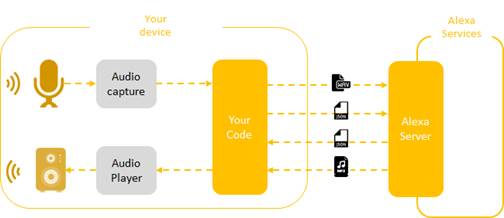
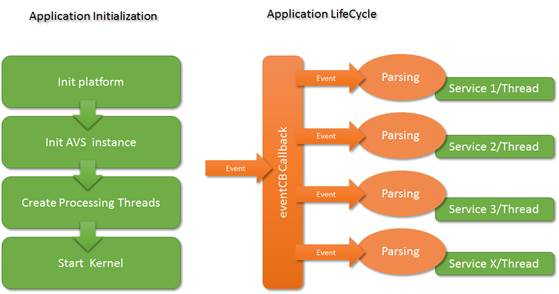

|
STVS4A
v1.1.1
|
|
STVS4A
v1.1.1
|
STVS4A is a Software Development Kit providing a support to design an STM32 based Alexa Voice Service device. The API allows to connect the AVS server, negotiates the authentication with the server. STVS4A provides also a support to receive directives and send events to the server. STVS4A has also a set of audio support including microphone acquisition, audio playback and potentially word spotting recognition (external component needed).
STVS4A takes the form of a library and a set of headers. The library is released as source code in order to ease the development. But the API definition is released in the avs.h header only. Only definition present in avs.h will be documented and will support a backward compatibility in future releases. No support will be done if an application uses or modify internal functions. The full API types and macros is documented in the MODULE section of this document. Before to read this document, please read first the STVS4A user guide that describe the basic implementation and main features.
The package includes a complete application that demonstrate how to use the API and How to implement some services. But even if those examples are fully functional, those code are not reference implementations and were not certified. But those examples may be used or modified without restriction and constitutes a good starting point for a final product.
STVS4A provide a support for many under the AVS hood.
· Network management
o HTTP/2
o IP stack, basic IP services)
o TLS
o Network Error Management
· AVS protocol Management
o Down Stream channel
o Connection
o Directive/event
o JSON formatting and parsing
· AVS State manage
o Dialogue models
· Security Token management
o Token Renew
o Persistent management
· Audio management
o Microphones
o Speakers
o Resampling
o Streaming
The AVS basic architecture is simple. As soon as the authentication is done with the server. The communication model with Alexa takes the form of audio raw wav or mp3 and JSON strings. When ALEXA sends you a JSON, we call this a directive, when the application sends a JSON to Alexa we call this an Event. The dialogue basic dialog model is handled by STVS4A. So, except for a multimedia player, most of the time, writing a new service takes the form of JSON string parsing or creation.
|
 |
To simplify the application, STVS4A uses a unique callback to receive directives from Alexa. STVS4A provides also a pre-parsing in order to minimize the application effort. When an application needs to send an event, STVS4A provides a support to ease the JSON construction and the function AVS_Send_JSon allow to send the event to Alexa. So, create a service consists on a switch/case to handle pre-parsed directives and STVS4A events, most of the time, the application needs a FreeRTOS thread to delegate processing of the directives. The file Examples/avs.c shows the basic of the STVS4A instantiation and how to catch STVS4A events/directive and delegates events to services.
|
 |
Basic STVS4A LiveCycle
To create a basic application, you need first to initialize all board components, then create an STVS4A instance and fill the factory with basic authentication information and start the RTOS kernel. Using this basic steps ALEXA will be able to start a conversation as soon as you call AVS_Set_State(hInstance, AVS_STATE_START_CAPTURE). Please refer to examples included in the package and the detailed descriptions of the API in the MODULE section to learn more about the event handling.
The Demonstration uses intensively Bitmap and Wav files. Those resource are mandatory for services such as GUI and Test. To ease the development those assets are stored in QSPI. The QSPI is an external flash is present, when a board has a graphic support. Assets can be flashed only with a specific flasher, for example IAR tool chain can’t flash directly this resource and will prompted a waring window each time you will flash your application. To flash QSPI, you need to configure a specific extension in the STM32 ST-Link-Utility in the menu External Loader. The loader must be set according to your board. For example, for the STM32F769I Disco, the loader must be MX25L512G_ STM32F769I-Disco.
The demonstration can be built in 2 modes, with or without assets. If the flag AVS_USE_QSPI_FLASHED is not present, the build will include all assets in the. HEX. This takes time and IAR won’t be able to flash it. But you can do it using ST-Link-Utility ST. After this initial step, you can add AVS_USE_QSPI_FLASHED to your build and the build won’t include all assets (more than 1 MB) since the QSPI is already flashed. This flag saves time and is the preferred way to work for this project.
It is possible to update GUI graphics or test sounds. All assets are transformed as C source and built as a source code in service_assets.c. Assets are always raw conversion without adding or removing data. Graphics are BMP 24 RGB bits without compression. The conversion is done using tools such as Hexworkshop http://www.hexworkshop.com/ do this job perfectly. Just make sure the arrays are always in “const”.
 1.8.4
1.8.4